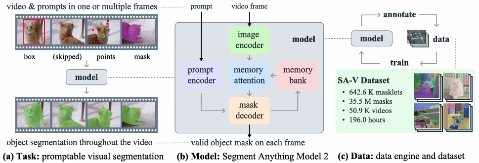
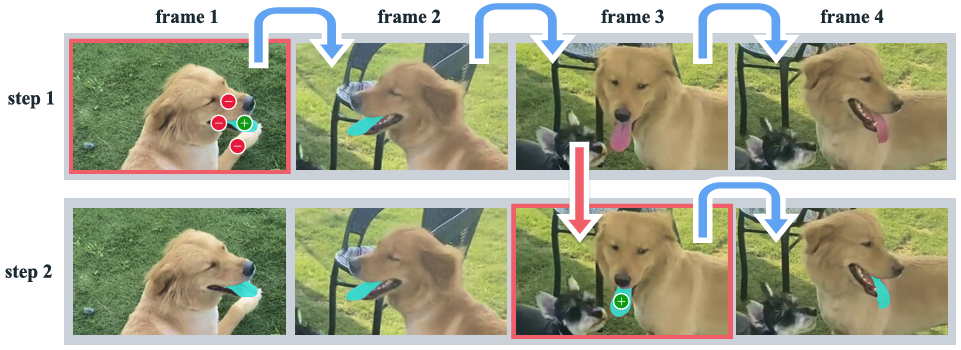

With the continued development of Segment Anything Model 2 (SAM2), I believe it’s essential to dive into the algorithmic details of SAM2 to gain a deeper understanding of how it works and its potential. In this blog, I’ll highlight the most important aspects of SAM2, distilling key insights to help readers grasp its fundamentals and applications.
How to use SAM2
The primary function of SAM2 is to extract masklets (i.e., a masklet is a set of masks for the same object) from videos based on interactive prompts. The supported prompt formats include:
- Point: Formatted as
[x, y], with attributes forpositiveandnegative. - Box: Formatted as
[x_min, y_min, x_max, y_max]without normalization. - Mask: Formatted as
numpy.array(H, W).
The model takes in all frames of a video, the content of the prompt(s), the corresponding frame, and the instance ID as input. It then outputs a dictionary of masks indexed by frame number and prompt instance ID, formatted as:
{
0: {'obj_0':..., 'obj_1':...},
1: {'obj_0':..., 'obj_1':...},
...
}
According to the official documentation, it may lost tracking during inference, as shown in Step 1, Frames 3 & 4 of the figure. However, thanks to the memory bank, a simple positive point can restore tracking (as demonstrated in Step 2).
In practice, this feature isn’t particularly useful since it provides only a limited efficiency boost for point-based pipelines while being quite complex to deploy. If deploying on an annotation platform, the best approach is to generate masks using SAM and then process them with SAM2. For developing automated annotation tools, bounding boxes are the most recommended prompt format.
Architecture
According to the official report, SAM2’s multi-object inference is essentially built upon single-frame inference. In other words, during the model’s forward pass, it only considers one prompt at a time. For example, if a prompt marks a cat in the first frame, SAM2 follows these steps for subsequent inference:
- Image Encoder: Uses MAE-pretrained Hiera (a pyramid feature network) as the image encoder to extract visual information.
- Memory Attention: Employs a Transformer-based structure to integrate image features with the memory bank. Specifically, it stacks multiple layers of self-attention (for image embeddings) and cross-attention in an interleaved “sandwich” pattern.
- Prompt Encoder: Extracts prompt information in token form, using the same prompt encoder as SAM.
- Memory Decoder: Performs attention operations on the fused image embeddings, memory-merged outputs, and prompt tokens (see diagram for details).
- The IoU score selects the highest-scoring mask from multiple outputs.
- The occlusion score determines whether the target object is absent in the current frame (which explains why SAM2 sometimes loses tracking).
- The object pointer carries memory information forward for the next frame’s prediction.
- Memory Encoder: The output masks are downsampled, element-wise summed with the image encoder output, then passed through a convolutional network before being stored in the memory bank.
- Memory Bank: Stores information from the most recent N frames and permanently retains M frames that contain prompts.
Data and Training
The development team collected and annotated the SA-V dataset, which consists of 50.9K videos and 190.9K masklets. This dataset was manually labeled using both SAM and SAM2. As the dataset size increased, SAM2’s performance improved, and annotation efficiency also benefited from iterative enhancements to SAM2 itself.
SAM2 was initially trained on SA-1B, a static image segmentation dataset. Given its architecture, during this phase, memory attention only applied self-attention to image embeddings, while output tokens were ignored in the memory decoder. The loss function used in pretraining differs slightly from that of SAM—details can be found in the research paper.
After pretraining, SAM2 was further trained on video data, which included SA-V, internal company-licensed videos, and a subset (10%) of SA-1B. The training alternated between video and static image datasets, with the data volume for each training iteration proportional to the dataset’s size.
A few additional key points:
- During training, the ratio of prompt types was 50% mask, 25% point, and 25% box.
- Videos had a 50% probability of being flipped to enable bidirectional propagation (which I discuss in another blog post).
- Random horizontal flips and random affine transforms were used for data augmentation.
Conclusion
SAM2 represents a significant step forward in video segmentation by integrating memory-based tracking with prompt-guided mask extraction. While it builds on the strengths of SAM, its reliance on single-frame inference and complex deployment considerations mean it is best suited for specific use cases, such as annotation platforms and automated labeling tools. As research in segmentation models continues to evolve, improvements in tracking stability and efficiency will likely make models like SAM2 even more powerful.
I hope this post helps clarify how SAM2 works at a high level. If you’re interested in exploring more, I encourage you to experiment with SAM2 yourself or dive into the official research paper for deeper insights.